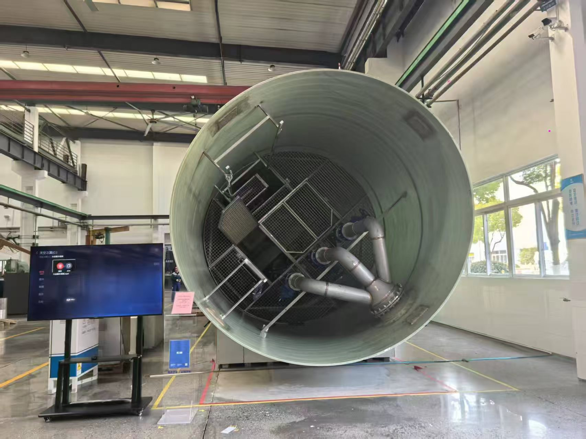
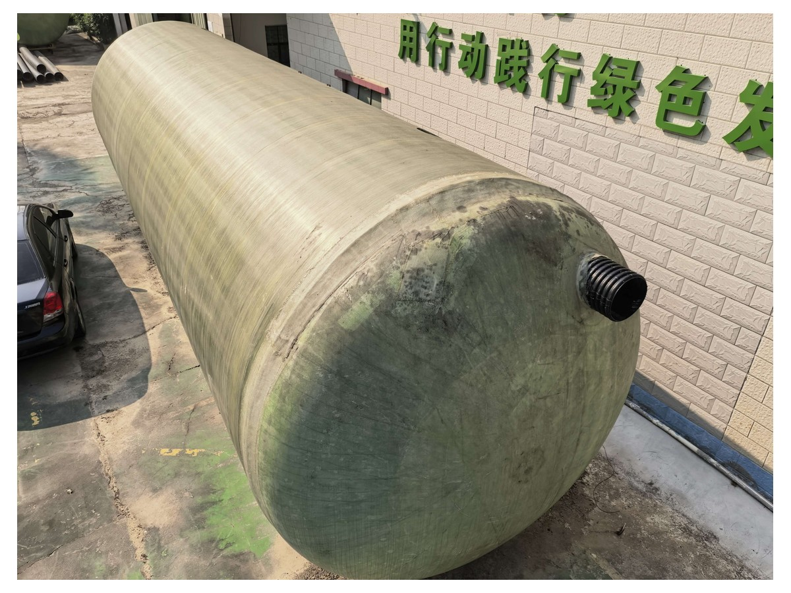

固威环保广州市固威环保科技开发有限公司
固威环保广州市固威环保科技开发有限公司适用场景
按介质、用途与安装条件确认项目适用性。〔待确认：主要应用领域〕
根据介质、荷载和环境条件确定结构、树脂体系及制造要求。

按介质、用途与安装条件确认项目适用性。〔待确认：主要应用领域〕
〔待确认：供货范围、图纸配合、安装调试及售后服务内容〕
结合使用条件核对配置，未明确的参数留待确认。
〔待确认：有效容积、直径、长度或高度〕
〔待确认：树脂体系、介质、温度与设计荷载〕
〔待确认：接口规格、检修口、支撑与安装方式〕
先说明储存或处理介质、有效容积、使用温度与安装方式。
核对罐体尺寸、检修口、进出水接口及现场连接条件。
材料、结构和检验项目需结合储存介质、温度及安装条件确定。
按设备结构和现场布置分类展示，点击图片可放大查看。

